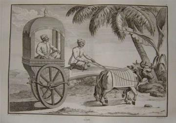
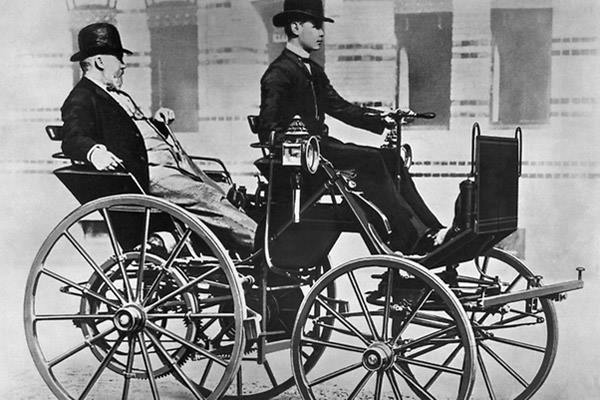
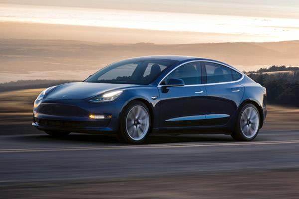
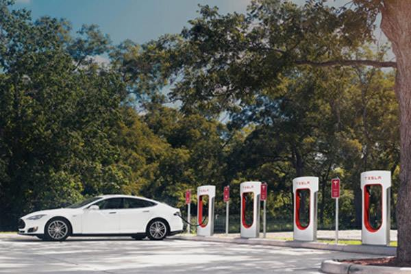
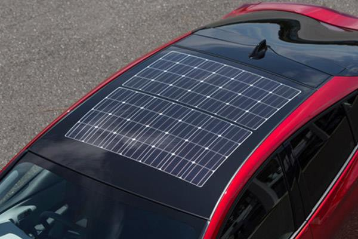
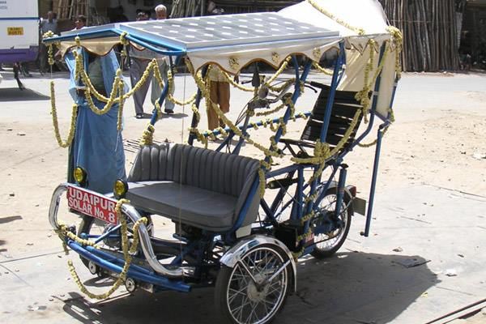
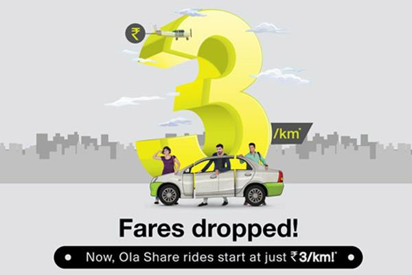
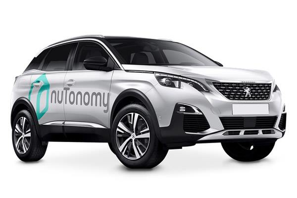
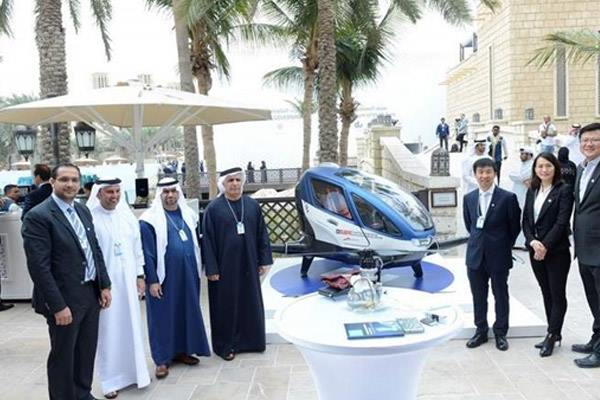
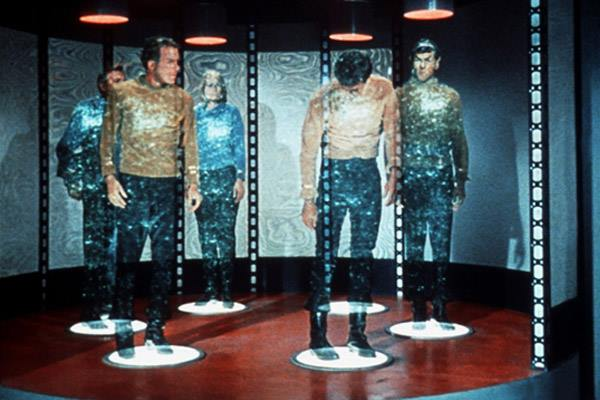

Blog //
Future of Cars driven by IoT Technology - Tracing them till extinction
Indian highways are notorious for their traffic jams. There are reports of traffic jams that have taken 2-3 days to clear, that too with just 10,000 – 12,000 vehicles.
This particular report was by Jean Baptiste Tavernier, a French traveller in 1670 CE and the "vehicles" were bullock carts. There are speculations that these traffic jams were common in India even during the Harappan civilization 5000 years ago!

-
A clay model (toy) from Harappa depicting their favourite mode of transport; the bullock cart (Credit: Harappa.com)
-

A view from 'Voyage aux Indes orientales' by Pierre Sonnerat, Paris, 1782
-
A present day bullock cart caravan in Tamil Nadu (Credit: Robert Harding)
A 7000 year old vehicle is being used today, almost in the same form. Now let's look at another vehicle invented in 1808, the car.
 Gottlieb Daimler and his son Adolf on the motor car (motor carriage), 1886. (Source: Diamler.com) Technology is changing at such a fast pace today that it's impossible to spot a vintage like this on the road. A modern car looks like this today
 The Tesla Model 3 (Credit: Tesla.com) The Model S from Tesla can travel up to 335 miles on a single charge. Super chargers like these are mushrooming all around the (developed) world
 (Credit: Tesla.com) Meanwhile, the sun keeps providing us with 300 times the energy produced by power plants in the world, free of cost. The reason for not accepting this free gift is not the fear of paying GST on it. We don't know a way to store that energy efficiently yet. Instead of waiting for the technology, we have started with whatever we have. Toyota has hired Panasonic to create roofs like these on its Prius.
 (Source: cleantechnica.com) If you park your car in the open after arriving in office, you can drive back 3.5 miles in the evening. Sun kissed India has abundant of the energy and has already experimented with solar rickshaws.
 (Credit: Mosssolar.com)
Norway and Netherlands plan to phase out all petrol and diesel cars by 2025 & India aims to do the same by 2030. The goal looks steep for India, because electricity & roads have still not reached all villages.
A solar + battery combination looks better for India. Alphabet's X Labs is planning to do away with expensive Lithium ion batteries and bring in hot salt instead
https://techcrunch.com/2017/07/31/alphabets-x-lab-is-working-on-renewable-energy-storage/
Salt is available cheap in India and it's usually hot!
Shared mobility has made it uneconomical to own a car anymore. Uber Pool and Ola Share have their cars full even in the afternoon. Uber's business is growing 250% YoY and India is its second largest market. 25% of that market is for Uber Pool. By FY19-20 demand for new cars could decline by about 5% due to the growing popularity of app-based cabs, according to an IDFC Securities report. The 2030 deadline for sale of petrol and diesel cars will also lower used car prices, dissuading even more new car buyers.
Autonomous cars are not what India is ready for though. Labour is cheap and road conditions unpredictable. The first commercial implementation of self driving taxi was implemented in August 2016 in Changi Airport, Singapore and covers a five mile area. The trails are expanding to some more areas this month.
 (Source: olacabs.com)
 (Credit: nuTonomy.com)
While legacy car rental companies like Hertz saw their stock prices slump 75% in response to competition from autonomous cars and ride hailing companies, it's the opposite in India. Portals like mychoize.com, zoomcar.com, selfdrive.in, rent2cash.com, autoriders.in and mylescars.com have cropped up to augment a market that ride hailing companies have created. All the sites remain fully booked on weekends, just like the small cars on Uber and Ola. By the way, car rental firms in US are back in business with tie ups with autonomous car companies.
India is waiting for something magical to happen in the space of flying cars. It could leapfrog technology in telecom, where it didn't have to lay copper cables criss-crossing the country as mobile phones took over. Elon Musk met India's Prime Minister Narendra Modi and suggested doing the same for electricity, by using its Powerwall rechargeable lithium-ion battery. While Uber is promising flying cars by 2020, the technology is already operational in Dubai.
-

Dubai is the apt place to start the service as legends in the area have always talked about it
-
You wouldn't want to take your laptop and smartphone on that trip though, just in case it rains. Unless everyone transforms into a Spiderman or Superman, or all the cars in the world fly, we'll need roads. Ultimately, we can do this and that will be the end of cars as we know them
-

My hobby is driving and I find long weekend drives relaxing. I'll miss those cars, but then my grandpa's hobby was hunting. Guess I'll have to pick up a new hobby as per the times.